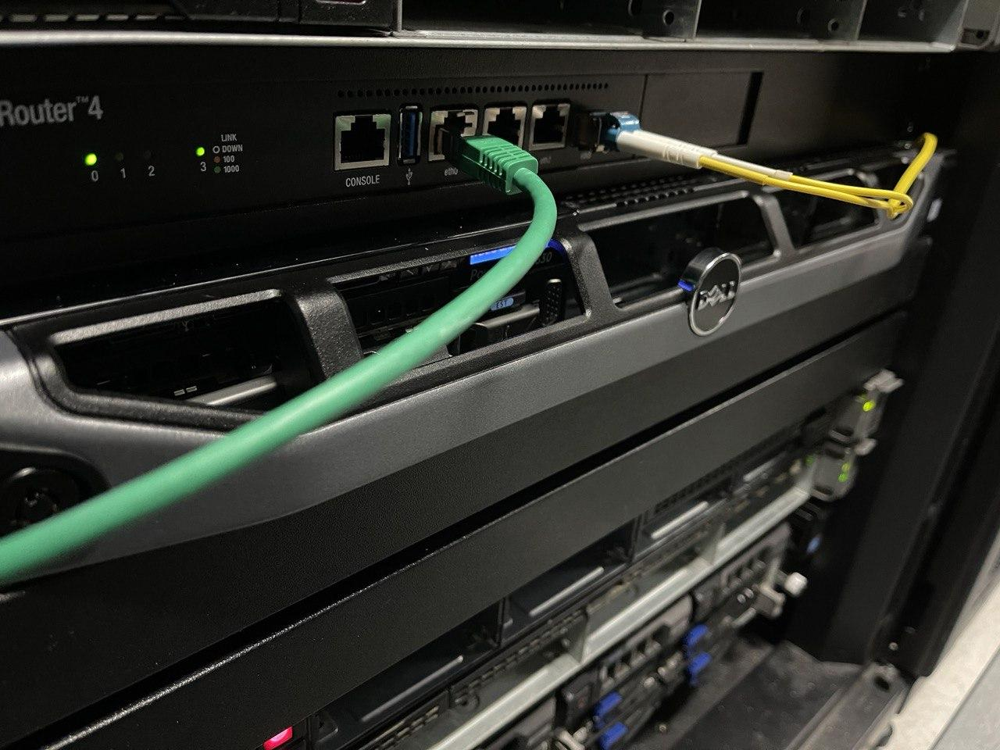

This is the story on how I migrated from a VPS to a Dell PowerEdge R630.
Migration
Dyjix has been my hosting provider since I switched off Scaleway in november 2020. Scaleway was great, but I needed more power for my money. Dyjix has pretty good solutions/pricings and you will get a big bunch of RAM and CPU for a decent amount of money per month.
Buying
I decided I needed more CPU and RAM to run more services, then after searching on Internet I found the company BargainHardware and could very quickly configure my server, buy it and had it delivered to France. A bunch of days later it was there (and I had to pay UPS the importation tax ^^).
Installing & story
Now was configuration time, I installed Proxmox without any issues and ran my first VM. I had it installed in another datacenter that Dyjix but it turned out that was a very very bad choice for technical reasons and for human related reasons. I just felt like a number and not as a customer the company was caring about, it was terrible. Hopefully the network configuration I had made was perfect and on first start the service was available and running.
Luckily Dyjix has housing services and I could reach out to them and they provided a custom better fitting solution for my server. I really do not know why I did not reach out to Dyjix first, anyway story is made and I am very happy of the service I have at Dyjix. They are a great team and really care about the service they provide !
Specs
It has a 24 x Intel(R) Xeon(R) CPU E5-2673 v3 @ 2.40GHz (1 Socket) and 128G of RAM in 4 x 32G sticks.
With 2 x 1To SSDs.
Technical stories
Microtik -> OPNsense -> pfSense
I had first installed Microtik to manage my routing but it was not free as I found out after searching for hours why I had a very poor network access (1 Mb/s). So I bought the 10G license (what a stupid idea) and it worked fine. The UI is fast and the CLI works fine too. That said it seemed to not perform great under heavy loads like DDOS attacks. I tried OPNsense but the GUI was incredibly slow for no good reason and I had some difficulties using the routing UI. So I installed pfSense (even if there is some debate going on because they are not completely open-source) and it works flawlessly.
VPN access
The other company did not even offer a VPN to access my server, this seems maybe not a big deal but it is ! Having access to your server without using the "Internet" IP is really something important. Dyjix has a VPN system that will allow you to access private IPs assigned to your server or your iDRAC port for example. This allows me to securely access my server and iDRAC (the DELL UI to access the embedded server controller system).
Now I can sleep knowing that if my server freezes or crashes I will still have access to restarting it or a console using the iDRAC web GUI !
From a security point of view it is better not to expose (what I had to do before..) the administrative UIs to the Internet. Someone could attack them and gain access to everything.
Peering and network speed
Dyjix is in peering with France-IX and France-IX peering point has CloudFlare as a peering. This is mind blowing and does make access times to my websites incredibly fast ! My ping to CloudFlare is about 1-2 ms. Dyjix has a network speed of 100G/s, this is also awesome !
Power consumption
At "idle" the power consumption is around 65-70 Watts now, more load is expected to make this number vary. With a more intense load it should be around 140 Watts and the power supply can handle 750 Watts. I will create another blog post to talk about how I monitor this with the tool Zabbix.
Conclusion
Now the server is running fine and all services migrated from the HDD-32 VM. The route to the IPV6 block will be deployed soon to Internet ! This server is now owned by my company: Wdes SAS and I am very satisfied with the machine, it works great and has all the performance needed.
Some pictures
Housing at Dyjix

Un-boxing